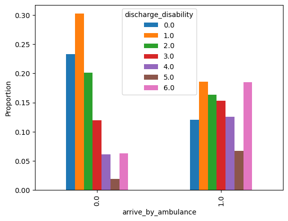

Ambulance#
Aims:#
Compare people who arrived by ambulance to those who did not
Uses dataset of people who arrived within four hours of known stroke onset.
Set up#
# Import packages and functions
from dataclasses import dataclass
import matplotlib.pyplot as plt
import numpy as np
import os
import pandas as pd
# Set max rows when display dataframe
pd.set_option('display.max_rows', 100)
# Linting
%load_ext pycodestyle_magic
%pycodestyle_on
# Set paths and filenames
@dataclass(frozen=True)
class Paths:
'''Singleton object for storing paths to data and files.'''
data_path = './../output/'
data_filename = 'reformatted_data.csv'
paths = Paths()
# Load data
data = pd.read_csv(os.path.join(paths.data_path,
paths.data_filename))
Comparing by whether arrive by ambulance#
# Find counts arriving by ambulance or not
arrive_ambulance_stats = (
data['arrive_by_ambulance']
.map({0: 'Did not arrive by ambulance', 1: 'Arrived by ambulance'})
.value_counts(dropna=False)
.reset_index(name='count'))
# Find proportions
arrive_ambulance_stats['percentage'] = (
arrive_ambulance_stats['count'] /
arrive_ambulance_stats['count'].sum()*100)
arrive_ambulance_stats
| index | count | percentage | |
|---|---|---|---|
| 0 | Arrived by ambulance | 123839 | 90.380896 |
| 1 | Did not arrive by ambulance | 13173 | 9.613995 |
| 2 | NaN | 7 | 0.005109 |
Patients who arrived by ambulance typically had:
More severe strokes (NIHSS)
Higher discharge disability (Rankin)
Shorter arrival to scan time
Similar scan to thrombolysis time and onset to arrival
(data
.groupby('arrive_by_ambulance')[['onset_to_arrival_time',
'prior_disability',
'discharge_disability',
'stroke_severity',
'arrival_to_scan_time',
'scan_to_thrombolysis_time']]
.describe()
.unstack()
.reset_index(name='value')
.rename(columns={'level_0': 'variable', 'level_1': 'analysis'})
.pivot(index=['variable', 'arrive_by_ambulance'],
columns='analysis', values='value'))
| analysis | 25% | 50% | 75% | count | max | mean | min | std | |
|---|---|---|---|---|---|---|---|---|---|
| variable | arrive_by_ambulance | ||||||||
| arrival_to_scan_time | 0.0 | 27.0 | 51.0 | 109.0 | 13173.0 | 87883.0 | 149.006073 | 1.0 | 1311.917713 |
| 1.0 | 15.0 | 26.0 | 50.0 | 123839.0 | 440117.0 | 93.860625 | 1.0 | 1540.675959 | |
| discharge_disability | 0.0 | 1.0 | 1.0 | 3.0 | 13097.0 | 6.0 | 1.787127 | 0.0 | 1.656527 |
| 1.0 | 1.0 | 3.0 | 5.0 | 122908.0 | 6.0 | 2.918728 | 0.0 | 2.010143 | |
| onset_to_arrival_time | 0.0 | 59.0 | 100.0 | 156.0 | 13173.0 | 240.0 | 109.195020 | 1.0 | 61.929199 |
| 1.0 | 74.0 | 104.0 | 149.0 | 123839.0 | 240.0 | 114.308756 | 1.0 | 51.890416 | |
| prior_disability | 0.0 | 0.0 | 0.0 | 1.0 | 13173.0 | 5.0 | 0.551431 | 0.0 | 1.016655 |
| 1.0 | 0.0 | 0.0 | 2.0 | 123839.0 | 5.0 | 1.098467 | 0.0 | 1.433088 | |
| scan_to_thrombolysis_time | 0.0 | 22.0 | 34.0 | 51.0 | 3024.0 | 318.0 | 41.118056 | 0.0 | 30.193328 |
| 1.0 | 19.0 | 30.0 | 47.0 | 37029.0 | 656.0 | 36.795998 | 0.0 | 28.463958 | |
| stroke_severity | 0.0 | 1.0 | 3.0 | 6.0 | 13173.0 | 42.0 | 5.096257 | 0.0 | 6.087541 |
| 1.0 | 3.0 | 6.0 | 14.0 | 123839.0 | 42.0 | 9.326149 | 0.0 | 8.361657 |
Patients who arrived by ambulance…
Lower proportion had infarction
Higher proportion thrombolysed
# Convert from 0/1 to False/True
amb_compare_cols = ['thrombolysis', 'infarction']
amb_compare = data[amb_compare_cols] == 1
# Add whether arrived by ambulance
amb_compare['arrive_by_ambulance'] = data['arrive_by_ambulance']
# Groupby arrive by ambulance and find proportion == 1
# (e.g. proportion thrombolysed)
(amb_compare
.groupby('arrive_by_ambulance')
.agg({i: 'mean' for i in amb_compare_cols}))*100
| thrombolysis | infarction | |
|---|---|---|
| arrive_by_ambulance | ||
| 0.0 | 22.956046 | 89.227966 |
| 1.0 | 29.900920 | 84.969194 |
# Create grouped bar plot based on proportions
(data
.groupby('arrive_by_ambulance')['discharge_disability']
.value_counts(normalize=True)
.unstack('discharge_disability')
.plot.bar())
plt.ylabel('Proportion')
plt.show()
